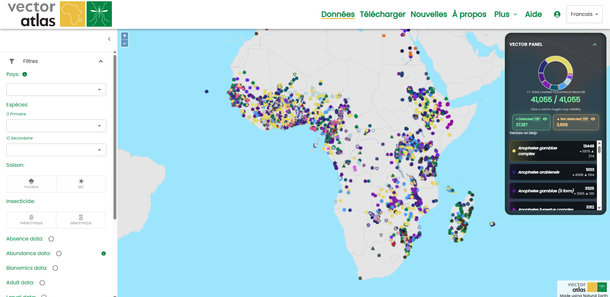
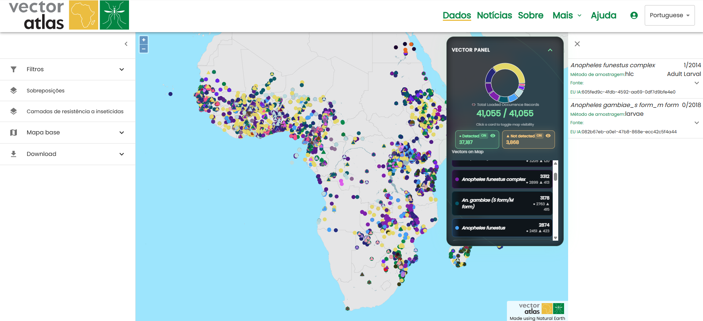
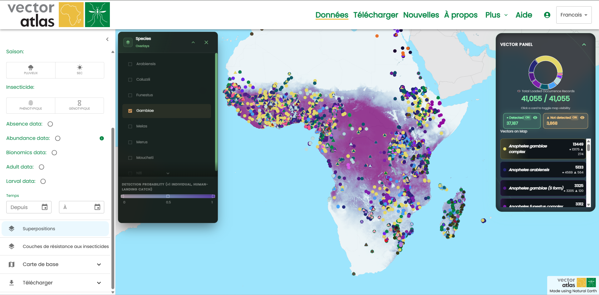
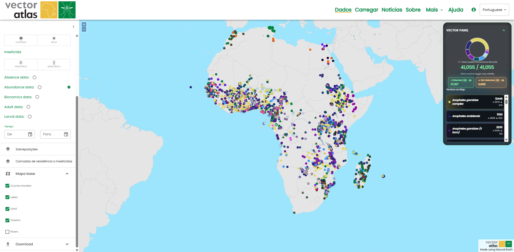

Utiliser la carte
La principale fonctionnalité du Vector Atlas est la vue cartographique, qui permet d’explorer les données contenues dans l’Atlas ; ces données peuvent être filtrées, examinées et téléchargées.
Accéder à la carte
Pour accéder à la carte, cliquez sur la carte de la page d’accueil, ou utilisez le lien de la carte dans la barre de navigation supérieure : les deux vous redirigeront vers la page /map.

Les outils de la carte se trouvent dans le menu de gauche et comprennent des outils de filtrage, d’affichage des superpositions, de modification de l’affichage des couches de base et de téléchargement des données.
Filtrer les données
Plusieurs filtres de données peuvent être appliqués grâce aux filtres disponibles dans la première section des outils à gauche. Les données peuvent être filtrées par :
pays,
espèce,
saison,
moyen de contrôle,
présence de données sur les adultes,
présence de données sur les larves,
la période des données (jusqu’au mois et à l’année)
zone sélectionnée (plus de détails ci-dessous)
Les différents filtres agissent comme une condition ET : par exemple, sélectionner l’Ouganda et An. arabiensis n’affiche que les données situées en Ouganda pour l’espèce An. arabiensis. En revanche, au sein d’un même filtre, la condition est de type OU : par exemple, sélectionner l’Ouganda et le Soudan dans le filtre des pays affichera toutes les données pour les deux pays.

Mode de sélection par zone
Les données peuvent également être filtrées par zone ; pour activer le mode de sélection par zone, cliquez sur le bouton de mode situé sous le filtre « Sélectionner par zone ».

Cela modifie le mode de la carte de sorte que chaque clic ajoute un point au contour du polygone de sélection ; cliquer à nouveau sur le point de départ ferme le polygone. Une fois le polygone terminé, les données sont filtrées selon cette zone. Un nouveau polygone peut être créé après que le premier est terminé ; le premier polygone est supprimé dès que le second est terminé — il n’y a donc jamais qu’un seul polygone actif à la fois.

Cliquer à nouveau sur le bouton du mode zone le désactive, mais ne supprime pas le polygone sélectionné. Vous pouvez ainsi cliquer sur des points à l’intérieur du polygone pour obtenir plus d’informations. Cliquer sur le bouton Remove selection effacera le polygone et supprimera tout filtre de zone appliqué aux données.
Obtenir plus d’informations sur les points
Cliquer sur des points de la carte ouvre le panneau d’informations à droite, affichant des détails supplémentaires sur chacun des points situés sous le clic (qui peuvent être nombreux et rapprochés).

Le panneau de détails peut être fermé grâce au bouton de fermeture situé en haut à gauche du panneau.
Superposer des surfaces
Les superpositions offrent divers résultats de modélisation qui peuvent être visualisés ensemble et combinés aux données pour découvrir de nouvelles perspectives. Chaque superposition peut être activée ou désactivée indépendamment.

Actuellement, l’ordre des superpositions ne peut pas être modifié, mais cette fonctionnalité est prévue à l’avenir.
Modifier le fond de carte
Le fond de carte peut être modifié en activant ou désactivant des fonctionnalités et des couches. Cela permet de personnaliser la visualisation, qui peut ensuite être téléchargée pour des rapports et des publications.
